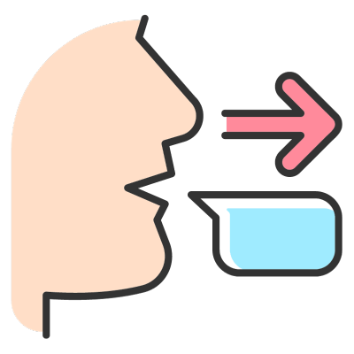
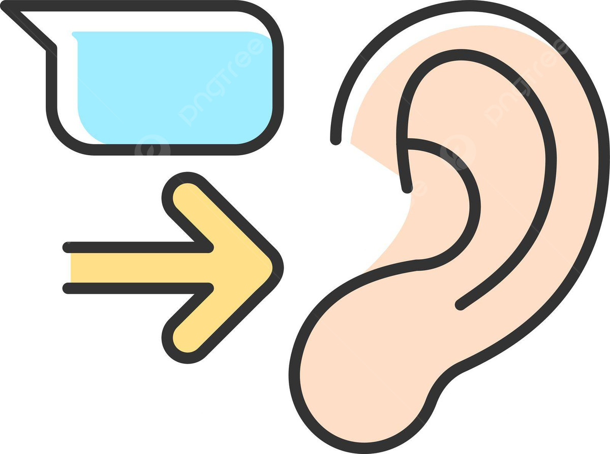
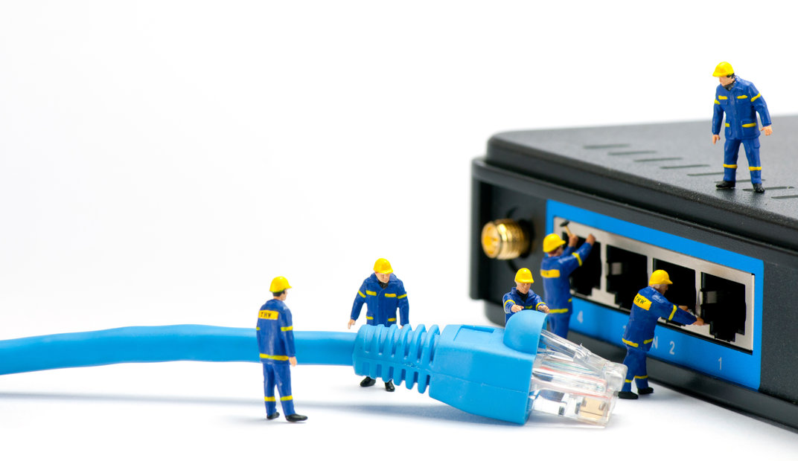
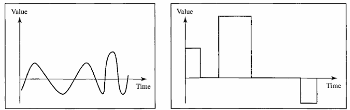
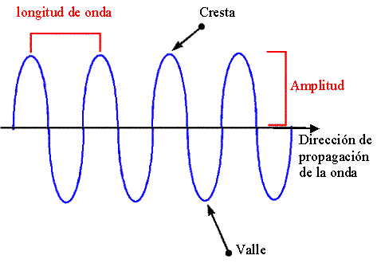

Conceptos básicos
Componentes de un sistema de comunicación
Mensaje: El mensaje es la información (datos) que se va a comunicar. Las formas más comunes de información incluyen texto, números, imágenes, audrio y video.
Ejemplos:
1. Mensaje de texto (SMS): Un mensaje corto enviado a través de la red de telefonía móvil.
2. Correo electrónico: Un mensaje digital enviado a través de Internet.
3. Llamada de voz: Comunicación verbal a través de una red telefónica.
4. Videollamada: Comunicación visual y auditiva a través de Internet.
5. Mensajería instantánea: Mensajes enviados y recibidos en tiempo real a través de aplicaciones como WhatsApp o Telegram.

Emisor: El emisor es el dispositivo que envía el mensaje de datos. Puede ser una computadora, una estación de trabajo, un teléfono, una cámara de video, etc.
Ejemplos:
1. Persona: En una conversación cara a cara, la persona que habla es el emisor.
2. Empresa: En una campaña publicitaria, la empresa que crea y distribuye el anuncio es el emisor.
3. Dispositivo electrónico: En telecomunicaciones, un dispositivo que envía señales o datos.
4. Servidor de correo electrónico: En el envío de correos electrónicos, el servidor que envía el correo es el emisor.
5. Medio de comunicación: En la difusión de noticias, el canal de televisión o el periódico que publica la noticia es el emisor
Receptor: El receptor es el dispositivo que recibe el mensaje. Puede ser una computadora, una estación de trabajo, un teléfono, un televisor, etc.
Ejemplos:
1. Estudiante en clase: El estudiante actúa como receptor al captar y comprender la información transmitida.
2. Televidente: Una persona que ve un programa de televisión y comprende el contenido transmitido. El televidente es el receptor del mensaje visual y auditivo.
3. Empleado: Un empleado que recibe y lee un correo electrónico de su jefe. El empleado es el receptor del mensaje escrito.
4. Ciudadano: Una persona que lee un periódico o escucha un discurso del presidente.
5. Conductor: Un conductor que escucha las instrucciones de un GPS. El conductor es el receptor de las indicaciones para llegar a su destino.
Medio de transmisión/Canal: El medio de transmisión es la ruta física por la que viaja un mensaje desde el remitente hasta el receptor.
Ejemplos:
1. Pares trenzados: Utilizados comúnmente en redes telefónicas y de datos.
2. Cable coaxial: Utilizado para la transmisión de señales de televisión y datos de Internet.
3. Ondas de radio: Utilizadas para la transmisión de señales de radio, televisión y redes Wi-Fi.
4. Microondas: Utilizadas para la transmisión de datos a largas distancias, como en enlaces de telecomunicaciones y satélites.
Protocolo: Un protocolo es un conjunto de reglas que rigen las comunicaciones de datos. Representa un acuerdo entre los dispositivos que se comunican.
Sin un protocolo, dos dispositivos pueden estar conectados pero no comunicarse, de la misma manera que una persona que habla francés no puede ser entendida por una persona que sólo habla japonés.
Ejemplos:
1. TCP (Transmission Control Protocol): Proporciona una comunicación confiable realizando un seguimiento de los datos enviados y recibidos para asegurar que lleguen correctamente.
2. UDP (User Datagram Protocol): Ofrece una comunicación más rápida pero menos confiable, ya que no realiza un seguimiento detallado de los datos transmitidos.
3. HTTPS (Hypertext Transfer Protocol Secure): Similar a HTTP, pero con una capa adicional de seguridad mediante el uso de SSL/TLS para cifrar los datos transmitidos.
4. SMTP (Simple Mail Transfer Protocol): Utilizado para el envío de correos electrónicos.
5. FTP (File Transfer Protocol): Utilizado para la transferencia de archivos entre un cliente y un servidor en una red.
6. DNS (Domain Name System): Traduce nombres de dominio legibles por humanos (como www.ejemplo.com) en direcciones IP numéricas
Representación de datos
Texto
Es una secuencia de bits (0 o 1). Se han diseñado diferentes conjuntos de patrones de bits para representar símbolos de texto.
Cada conjunto se denomina código y el proceso de representación de símbolos se denomina codificación.
Números
Los números también se representan mediante patrones de bits.
Sin embargo, no se utiliza un código como ASCII para representar números; el número se convierte directamente en un número binario para simplificar las operaciones matemáticas.
Imágenes
Las imágenes también se representan mediante patrones de bits. En su forma más simple, una imagen se compone de una matriz de píxeles (elementos de imagen), donde cada píxel es un pequeño punto.
El tamaño del píxel depende de la resolución. Por ejemplo, una imagen se puede dividir en 1000 píxeles o 10 000 píxeles.
En el segundo caso, hay una mejor representación de la imagen (mejor resolución), pero se necesita más memoria para almacenar la imagen.
Audio
El audio se refiere a la grabación o transmisión de sonido o música. El audio es por naturaleza diferente del texto, los números o las imágenes.
Es continuo, no discreto. Incluso cuando usamos un micrófono para convertir la voz o la música en una señal eléctrica, creamos una señal continua.
Video
El vídeo se refiere a la grabación o transmisión de una imagen o película.
El vídeo puede producirse como una entidad continua (por ejemplo, mediante una cámara de televisión) o puede ser una combinación de imágenes, cada una de ellas una entidad discreta, dispuestas para transmitir la idea de movimiento.
Flujo de datos
Simplex
En el modo simplex, la comunicación es unidireccional, siendo que solo uno de los 2 dispositivos puede transmitir o mandar información, mientras que la otra solo la recibe.
Un ejemplo de esto sería como si se tratara de una carretera de una sola dirección, siendo que solo puede “circular” la información por esa dirección.
Half-Duplex
En el modo half-duplex, los dispositivos pueden tanto transmitir como recibir datos del uno del otro, pero no al mismo tiempo, cuando uno de estos está mandando información, el otro solo puede recibirlo y viceversa.
Siguiendo con el ejemplo anterior, este se podría tratar de una carretera, pero siendo de doble sentido, pero siendo de una sola línea, siendo que solo puede “circular” un tipo de información a la vez.
Full-Duplex
El modo full-duplex (también llamado duplex), ambos dispositivos pueden transmitir y recibir información de manera simultánea.
De igual manera se podría representar como una carretera donde se permite la circulación en ambas direcciones, con la diferencia que hay suficiente espacio para que la información pueda pasar al mismo tiempo.
Comunicación de datos
Definición
Las comunicaciones de datos son el intercambio de datos entre dos dispositivos a través de algún tipo de medio de transmisión, como un cable.
La eficacia de un sistema de comunicaciones de datos depende de cuatro características fundamentales:
Características
Entrega: El sistema debe entregar los datos al destino correcto. Los datos deben ser recibidos por el dispositivo o usuario previsto y solo por ese dispositivo o usuario.
Precisión: El sistema debe entregar los datos con precisión. Los datos que se hayan alterado durante la transmisión y que no se hayan corregido no se pueden utilizar.
Timeless: El sistema debe entregar los datos de manera oportuna. Los datos entregados tarde son inútiles.
En el caso del video y el audio, la entrega oportuna significa entregar los datos a medida que se producen, en el mismo orden en que se producen y sin demora significativa.
Este tipo de entrega se denomina transmisión en tiempo real.
Jitter: Se refiere a la variación en el tiempo de llegada de los paquetes. Es el retraso desigual en la entrega de paquetes de audio o video.
Tipos de datos
Datos analógicos
Son continuos y toman valores continuos. Tiene infinitos niveles de intensidad a lo largo de un período de tiempo.
Datos digitales
Se refieren a información que tiene estados discretos. Puede tener solo un número limitado de valores definidos.
Tipos de señales
•Señal analógica simple: Una onda sinusoidal, no se puede descomponer en señales más simples.
•Señal analógica periódica compuesta: Está formada por múltiples ondas sinusoidales simples.
Señal analógica
Tiene infinitos niveles de intensidad a lo largo de un período de tiempo.
A medida que la onda se mueve del valor A al valor B, pasa por un número infinito de valores a lo largo de su trayectoria e incluye uno o más valores.
Señal digital
Puede tener solo un número limitado de valores definidos. Aunque cada valor puede ser cualquier número, como 1 y 0.
Características de una onda
•Período: Se refiere a la cantidad de tiempo, en segundos, que una señal necesita para completar un ciclo.
•Frecuencia: Se refiere a la cantidad de períodos en 1 segundo.
•Longitud de onda: Une el perídoo o la frecuencia de una onda sinusoidal simple a la velocidad de propagación del medio.
•Fase: Describe la posición de la onda relativa en el tiempo o periodo de 0.
•Amplitud: El pico de amplitud es el valor absoluto mayor de la intensidad, proporcionalmente a la energía que la onda lleva, para señales eléctricas la amplitud se puede representar en volts o voltaje.
Señales compuestas
Definición
Una sola señal senoidal (señal simple) no es util dentro de la comunicación de datos; es cuando estas se juntan y forman las señales compuestas que son las que pueden transmitir una mayor cantidad de datos.
Siendo en los inicios del año 1900, el francés matemático Jean-Baptiste Fourier mostró que cualquier señal compuesta es una combinación de señales simples con diferentes frecuencias, amplitudes y fases.
Siendo a este término el Análisis de Fourier. Las señales compuestas pueden ser periódicas o aperiódicas.
Una señal compuesta periódica puede ser descompuesta en una serie de señales simples con frecuencias discretas o limitadas.
Siendo que las señales compuestas aperiódicas pueden ser descompuestas en una combinación de infinitos número de señales simples con frecuencias continuas.